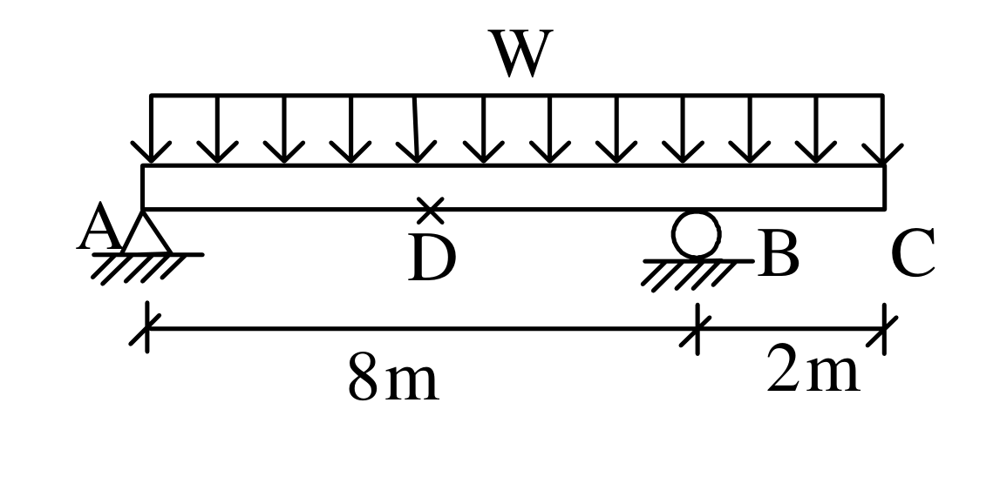
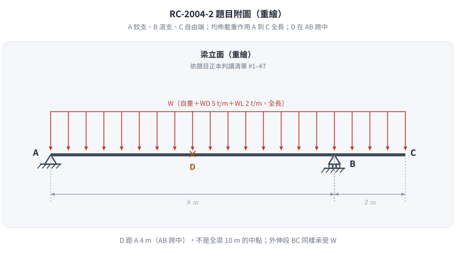
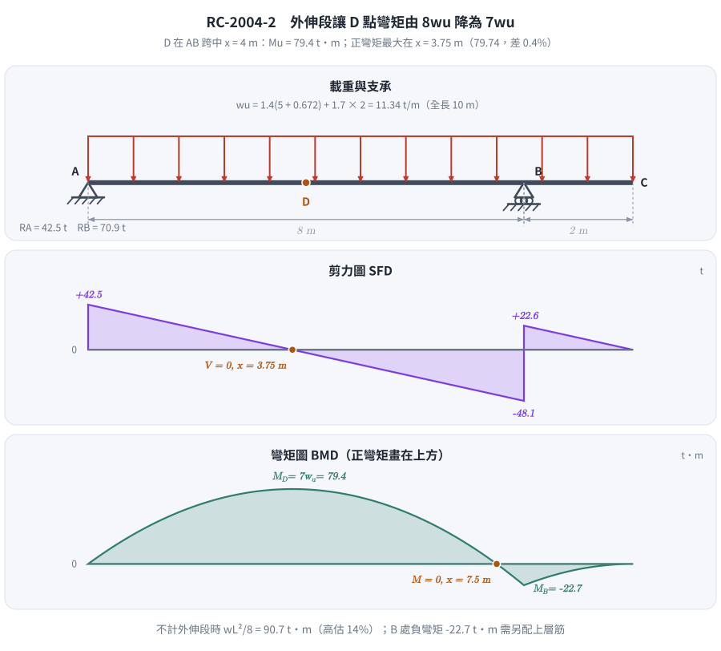

📄 題目正本：考卷原文・附圖・判讀清單（已確認）
RC-2004-2 題目正本
本檔只記錄考卷上寫了什麼、圖上畫了什麼，不含任何解法。解析見同資料夾
RC-2004-2.md。
判讀清單已經使用者確認（凍結）；本檔原則上不再修改（改動須回考卷原圖並記 log）。
| 項目 | 內容 |
|---|---|
| 考卷 | raw/exams/RC-2004_鋼筋混凝土設計與預力.pdf 第 1 頁（全一張之正面），第二題 |
| 考年 | 民國 93 年（2004） |
| 配分 | 25 分 |
| 附圖 | RC-2004-2-fig-2.png（梁支承與載重圖，500 dpi 重新擷取）；舊證據圖 RC-2004-2-fig-1.png 在 A 端尺寸線旁壓有滑鼠游標，保留不刪 |
| 判讀狀態 | 已確認（2026-11-12 使用者確認；轉錄 2026-11-12，PyMuPDF 110 dpi 全頁目視＋抽出文字核對，附圖 500 dpi；D 點位置以 PDF 向量座標量測；盲讀後才比對既有解析） |
1. 考卷原文（逐字）
二、梁結構如圖所示，其尺寸為寬 40cm，高 70cm，有效深度為 d=60cm，d'=6.5cm，假若除了梁本身自重外，此梁另外承受均佈呆載重 $W_D$=5 t/m 及均佈活載重 $W_L$=2 t/m，試計算梁中央 D 點所需之縱向鋼筋量為何？並配置之。（25 分）
假設所用縱向鋼筋皆是 D32，箍筋為 D13，$f'_c = 280\ \text{kgf/cm}^2$，$f_y = 4200\ \text{kgf/cm}^2$。
2. 考卷給的公式、附表與參數
- 題文數值：$b=40$ cm、$h=70$ cm、$d=60$ cm、$d'=6.5$ cm；$W_D=5$ t/m、$W_L=2$ t/m（另加梁自重）；縱筋 D32、箍筋 D13；$f'_c=280$、$f_y=4200$ kgf/cm²。
- 第一題下方列有「資料：」（版面位於第一題簡答題之後、第二題之前，未註明只適用第一題）：
- 鋼筋 D10，$a_b$=0.71cm²，D=9.5mm
- 鋼筋 D13，$a_b$=1.29cm²，D=12.7mm
- 鋼筋 D19，$a_b$=2.84cm²，D=19.1mm
- 鋼筋 D25，$a_b$=5.10cm²，D=25.4mm
- 鋼筋 D32，$a_b$=8.19cm²，D=32.3mm
- $E_c = 15000\sqrt{f'_c}$，$f_r = 2.0\sqrt{f'_c}$
- 沒有給：載重因數（載重組合）、混凝土單位重、強度折減係數 $\phi$、保護層厚度、粒料尺寸、設計規範版本。
- 卷首注意事項：㈠不必抄題；㈡可以使用電子計算器。
3. 附圖

圖面文字照錄：W、A、D、B、C、8m、2m。
4. 判讀清單
「把握」標不確定者請優先確認；解讀類項目（題目用字的意思）另標「解讀」。
| # | 項目 | 判讀 | 圖上／題文依據 | 把握 |
|---|---|---|---|---|
| 1 | 支承 A | 鉸支承（固定鉸） | 三角形＋地面剖線 | 確定 |
| 2 | 支承 B | 滾支承 | 圓圈＋地面剖線 | 確定 |
| 3 | C 端 | 自由端，BC 為懸臂外伸段 | C 點無支承符號 | 確定 |
| 4 | 跨度 | AB＝8 m（簡支跨）、BC＝2 m（外伸） | 尺寸線 8m、2m；刻度分別對齊 A、B、C | 確定 |
| 5 | 載重範圍 | 均佈載重 W 作用於 A 到 C 全長 10 m（含外伸段） | 載重箭頭由 A 正上方畫到 C 正上方 | 確定 |
| 6 | W 的內容 | W＝自重＋$W_D$（5 t/m）＋$W_L$（2 t/m），題文未區分活載重是否部分跨佈置 | 題文；圖上只有一個全長 W | 確定（解讀） |
| 7 | D 點位置 | AB 跨中央，距 A 4 m（不是全梁 10 m 的中點 5 m） | 題文「梁中央 D 點」；PDF 向量座標：A 刻度 x=299.2、B 滾支承圓心 x=393.7、D「×」中心 x=345.9 → 距 A ≈ 3.96 m | 確定（解讀） |
| 8 | 斷面 | 矩形，$b=40$、$h=70$、$d=60$、$d'=6.5$ cm（$d'$ 為壓力筋形心深度，暗示可配壓力筋） | 題文；本題無斷面圖 | 確定 |
| 9 | 所求 | D 點所需縱向鋼筋量並配置（使用 D32，箍筋 D13） | 題文 | 確定 |
| 10 | 考卷沒有給 | 載重因數、混凝土單位重（算自重用）、$\phi$、保護層，皆須考生依規範假設 | 全題 | 確定 |
轉錄：2026-11-12（RC-U1-1 題目正本推廣・批 1）
確認：2026-11-12 使用者確認（RC-U1-1 題目正本推廣・批 1，關卡一）
考題編號：RC-2004-2
主分類： RC-U1-1 RC 梁彎矩強度分析與設計
副分類： 無
設計法： USD 強度設計法
標籤： 外伸梁 懸臂梁 D點跨中彎矩 單筋梁 Whitney應力塊 D32鋼筋 雙排配筋 過渡區φ值 ACI載重組合
1. 題目（考卷原文見題目正本）
考卷原文、公式／附表、附圖與判讀清單（已確認）見
RC-2004-2-problem.md。本節只列解題時最容易讀錯的地方與本解使用的記號；題意以題目正本為準。

重繪自考卷附圖，依題目正本判讀清單 #1–#7；B 是滾支承，D 在 AB 跨中（距 A 4 m），載重涵蓋外伸段。
常見誤讀
| 項目 | 正確判讀 | 常見誤讀 |
|---|---|---|
| 支承 | A 鉸支、B 滾支、C 自由端（判讀 #1–#3） | 把 B 也讀成鉸支承（本解 2026-11-12 前圖說即如此；對垂直載重反力不變） |
| D 點 | AB 跨中，距 A 4 m（判讀 #7） | 取全梁 10 m 的中點 5 m |
| 載重範圍 | W 作用 A 到 C 全長，含外伸段（判讀 #5） | 只放在 AB 跨 |
| 考卷沒給 | 載重因數、混凝土單位重、$\phi$、保護層（判讀 #10）；本解取 $1.4D+1.7L$、2.4 t/m³ | 當成題目條件 |
本解記號： $b=40$、$h=70$、$d=60$、$d'=6.5$ cm；$w_D=5$、$w_L=2$ t/m，$w_{SW}$＝梁自重；$W_u$＝因數化均佈載重；$M_u^D$＝D 點因數化彎矩。
2. 考題核心精神與出題者意圖
核心觀念： 外伸梁的力學分析（反力計算 → D 點彎矩）+ USD 單筋梁設計 + D32 鋼筋排列。
測驗重點：
- 正確求出懸臂端對簡支段的反力影響（懸臂使 B 支承力增大，A 支承力減小）
- 判斷是否需要雙筋（本題 $M_u < \phi M_{n,\max}$ → 單筋即可）
- D32 鋼筋排列：單排最多 5 根，超過需排兩排
- 雙排配筋導致實際 $\varepsilon_t$ 落入過渡區，需調整 $\phi$
3. 解題戰略地圖與陷阱分析
作戰計畫：
- 計算梁自重 $w_{SW}$，求總因數化載重 $W_u$
- 由靜力求 $R_A$、$R_B$（ΣMa = 0）
- 求 D 點（$x = 4\ \text{m}$）因數化彎矩 $M_u$
- 計算 $\phi M_{n,\max}$（單筋上限）確認不需雙筋
- 設計 $A_s$，選用 D32 鋼筋根數
- 驗核 $\phi M_n \ge M_u$（注意 $\varepsilon_t$ 是否進入過渡區）
關鍵陷阱（3 個）：
- ⚠ 懸臂改變反力：$R_A = 3.75W_u$（≠ $W_u L/2 = 4W_u$），懸臂使 A 端反力減小
- ⚠ D32 排列限制：單排最多 5 根（$b = 40\ \text{cm}$ 限制），6 根需排兩排，導致 $\varepsilon_t$ 偏低進入過渡區，$\phi < 0.9$
- ⚠ 加入 $w_{SW}$ 後再因數化：梁自重屬死載重，須先加入再乘 1.4
3.5 變數層次分析 (Variable Hierarchy Analysis)
最終目標
求 D 點所需縱向鋼筋量，並完成鋼筋配置。
本題關鍵公式（依計算順序）
$$\text{Step 1: } W_u = 1.4(w_D + w_{SW}) + 1.7\,w_L$$
$$\text{Step 2: } R_B = \frac{W_u \times 10 \times 5}{8},\quad R_A = 10W_u - R_B$$
$$\text{Step 3: } M_u^D = R_A \times 4 - W_u \times \frac{4^2}{2}$$
$$\text{Step 4: } R_n = \frac{M_u}{\phi \cdot b \cdot d^2},\quad \rho = \frac{0.85f'_c}{f_y}\left[1-\sqrt{1-\frac{2R_n}{0.85f'_c}}\right]$$
$$\text{Step 5: } A_s = \rho \cdot b \cdot d \quad\Rightarrow\quad \text{選用 D32 根數}$$
$$\text{Step 6: } a = \frac{A_s f_y}{0.85f'_c b},\quad \varepsilon_t = 0.003\frac{d-c}{c},\quad \phi M_n \ge M_u\ ?$$
L1：題目直接給定
| 符號 | 數值 | 說明 |
|---|---|---|
| $b,h,d$ | $40,70,60\ \text{cm}$ | 梁斷面 |
| $w_D$（不含自重） | $5\ \text{t/m}$ | 均布呆載重 |
| $w_L$ | $2\ \text{t/m}$ | 均布活載重 |
| $L_{AB}$ | $8\ \text{m}$ | 簡支段 |
| $L_{BC}$ | $2\ \text{m}$ | 懸臂段 |
L2：需知識點推導
| 符號 | 公式／來源 | 卡關? |
|---|---|---|
| $w_{SW}$ | $0.40 \times 0.70 \times 2.4\ \text{t/m}^3 = 0.672\ \text{t/m}$ | |
| $W_u$ | $1.4(5.672) + 1.7(2) = 11.34\ \text{t/m}$ | |
| $R_A, R_B$ | 靜力計算 | |
| $M_u^D$ | $7W_u = 79.4\ \text{t·m}$ | |
| $\phi M_{n,\max}$ | 以 $\varepsilon_t = 0.005$ 計算上限 | |
| $A_s$ | 需求量 vs 6-D32 提供量 | |
| $\varepsilon_t$ | 依 $c$ 計算（過渡區判斷） |
4. 步驟化詳細計算過程
① 梁自重與因數化載重
$$w_{SW} = b \times h \times \gamma = 0.40 \times 0.70 \times 2400 = 672\ \text{kg/m} = 0.672\ \text{t/m}$$
$$W_u = 1.4(w_D + w_{SW}) + 1.7\,w_L = 1.4(5 + 0.672) + 1.7 \times 2 = 7.941 + 3.400 = 11.34\ \text{t/m}$$
② 支承反力（均布載重 $W_u$ 作用於全長 10 m）
$$\sum M_A = 0:\quad R_B \times 8 = W_u \times 10 \times 5 \Rightarrow R_B = \frac{50 \times 11.34}{8} = 70.9\ \text{t}$$
$$R_A = 11.34 \times 10 - 70.9 = 42.5\ \text{t}$$
③ D 點因數化彎矩（$x = 4\ \text{m}$ 自 A）
$$M_u^D = R_A \times 4 - W_u \times \frac{4^2}{2} = 42.5 \times 4 - 11.34 \times 8 = 170.0 - 90.7 = \boxed{79.4\ \text{t·m}}$$

圖 2 外伸段的載重把 A 端反力壓到 $3.75w_u$，D 點彎矩只剩 $7w_u$。這張圖攔下三個錯：照無外伸簡支梁取 $w_uL^2/8 = 8w_u$（高估 14%）、把 D 取在全梁中點 5 m，以及忽略 B 支承處需要上層筋的負彎矩。
④ 檢核是否需要雙筋（以 $\varepsilon_t = 0.005$ 計算 $\phi M_{n,\max}$）
$\varepsilon_t = 0.005$ 時的中性軸深度：
$$c_{0.005} = \frac{0.003}{0.003+0.005} \times d = \frac{0.003}{0.008} \times 60 = 22.5\ \text{cm}$$
$$a_{0.005} = \beta_1 c = 0.85 \times 22.5 = 19.13\ \text{cm}$$
$$A_{s,0.005} = \frac{0.85 f'_c \cdot b \cdot a}{f_y} = \frac{9520 \times 19.13}{4200} = 43.4\ \text{cm}^2$$
$$\phi M_{n,\max} = 0.9 \times 43.4 \times 4200 \times \left(60 - \frac{19.13}{2}\right) = 0.9 \times 182{,}280 \times 50.44 = 82.7\ \text{t·m}$$
結論： $M_u = 79.4\ \text{t·m} < \phi M_{n,\max} = 82.7\ \text{t·m}$ → 單筋梁即可，$\phi = 0.9$
⑤ 設計 $A_s$（$\phi = 0.9$）
$$R_n = \frac{M_u}{\phi \cdot b \cdot d^2} = \frac{79.4 \times 10^5}{0.9 \times 40 \times 60^2} = \frac{7{,}940{,}000}{129{,}600} = 61.3\ \text{kgf/cm}^2$$
$$\rho = \frac{0.85 f'_c}{f_y}\left[1 - \sqrt{1 - \frac{2R_n}{0.85f'_c}}\right] = \frac{0.85 \times 280}{4200}\left[1 - \sqrt{1 - \frac{2 \times 61.3}{238}}\right]$$
$$= 0.05667 \times \left[1 - \sqrt{1 - 0.5151}\right] = 0.05667 \times \left[1 - \sqrt{0.4849}\right] = 0.05667 \times 0.3036 = 0.01720$$
$$A_{s,\text{req}} = \rho \cdot b \cdot d = 0.01720 \times 40 \times 60 = 41.3\ \text{cm}^2$$
最小鋼筋量驗核：
$$A_{s,\min} = \frac{14}{f_y} \times b \times d = \frac{14}{4200} \times 40 \times 60 = 8.0\ \text{cm}^2 \ll 41.3\ \text{cm}^2\ \checkmark$$
⑥ 選用鋼筋（D32，$a_b = 8.19\ \text{cm}^2$）
$$n_{\min} = \frac{41.3}{8.19} = 5.04 \Rightarrow \text{需 6 根 D32}$$
5 根驗核：$A_s = 40.95\ \text{cm}^2$，$a = 18.1\ \text{cm}$，$\phi M_n = 0.9 \times 171{,}990 \times 51.0 = 78.9\ \text{t·m} < 79.4\ \text{t·m}$（不足）
使用 6-D32： $A_s = 6 \times 8.19 = 49.14\ \text{cm}^2$
⑦ 驗核 $\phi M_n$（6 根 D32）
$$a = \frac{49.14 \times 4200}{0.85 \times 280 \times 40} = \frac{206{,}388}{9{,}520} = 21.67\ \text{cm}$$
$$c = \frac{a}{\beta_1} = \frac{21.67}{0.85} = 25.49\ \text{cm}$$
$$\varepsilon_t = 0.003 \times \frac{d-c}{c} = 0.003 \times \frac{60-25.49}{25.49} = 0.003 \times 1.354 = 0.00406$$
由於 $\varepsilon_y < \varepsilon_t = 0.00406 < 0.005$（過渡區），需調整 $\phi$：
$$\phi = 0.65 + (\varepsilon_t - 0.002) \times \frac{0.25}{0.003} = 0.65 + \frac{0.00406-0.002}{0.003} \times 0.25 = 0.65 + 0.172 = 0.822$$
$$\phi M_n = 0.822 \times 49.14 \times 4200 \times \left(60 - \frac{21.67}{2}\right) = 0.822 \times 206{,}388 \times 49.165$$
$$= 0.822 \times 10{,}146{,}779 = 8{,}340{,}652\ \text{kgf·cm} = \boxed{83.4\ \text{t·m}}$$
$$\phi M_n = 83.4\ \text{t·m} \ge M_u = 79.4\ \text{t·m} \quad \checkmark$$
⑧ 鋼筋配置
排列驗核（$b = 40\ \text{cm}$，D32 + D13 箍筋，覆蓋層 4 cm）：
單排最大根數：
$$b = 2(4 + 1.27) + n \times 3.23 + (n-1) \times 3.23 \le 40\ \text{cm}$$
$$\Rightarrow (2n-1) \times 3.23 \le 29.46 \Rightarrow n \le 5.06 \Rightarrow \text{單排最多 5 根}$$
→ 6 根 D32 需分兩排（3+3 排列）
各排距底部距離：
- 第 1 排（底部）：$4 + 1.27 + 1.615 = 6.885\ \text{cm}$
- 第 2 排：$6.885 + 3.23 + 2.5 = 12.615\ \text{cm}$（排間淨距 25 mm）
合力中心：$\bar{y} = \dfrac{3 \times 6.885 + 3 \times 12.615}{6} = 9.75\ \text{cm}$ 自底部
實際有效深度：$d_\text{actual} = 70 - 9.75 = \mathbf{60.25\ \text{cm}} \approx 60\ \text{cm}$ ✓
最終配置：底部拉力筋 6-D32（兩排，各 3 根）
5. 關鍵爭議點與進階探討
① D 點正確為 A-B 跨中（非 A-C 之中）
題目圖示 A-D-B-C 排列，D 在 A 與 B 之間，確認 $x_D = 4\ \text{m}$ 自 A。若誤將 D 取在 A-C 全長中點（$x = 5\ \text{m}$），所求彎矩將不同。
② 懸臂使 A 端反力「縮水」
若無懸臂，$R_A = 4.5W_u$；加入 2 m 懸臂後，$R_A = 3.75W_u$，減少 16.7%。這導致 D 點正彎矩由 $wL^2/8 = 8W_u$ 降至 $7W_u$，考生容易忽略懸臂的影響。
③ 鋼筋過渡區的設計取向
6 根 D32 使 $\varepsilon_t = 0.00406$（過渡區），$\phi = 0.822$ 而非 0.9。這說明在設計初期假設 $\phi = 0.9$ 求出 $A_s = 41.3\ \text{cm}^2$，再配置 6 D32（49.14 cm²）後，$\phi$ 下降但 $\phi M_n$ 仍足夠——是典型的「設計迭代」情形。考場上可直接選 6 根，再驗核 $\phi M_n$，不需重算 $A_s$。
修正日期：2026-11-12（§1 改為指向題目正本，重繪題目附圖 figs/RC-2004-2-fig-1-problem.svg；刪除「A、B 為鉸支承」誤述）
圖解補繪：2026-11-13（圖 2 載重／剪力／彎矩圖；向量圖，腳本 gen_RC-2004-2.py，可重跑，檔尾對 §4 公佈值 assert；非勘誤）